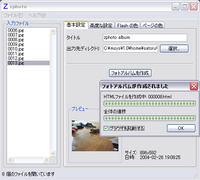
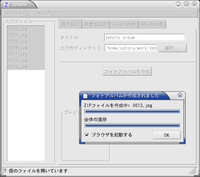

English | Japanese
Last Modified: 2004-07-21 (Since: 2002-05-22)
zphoto is a flash-based photo album generator. You can create a flash-based on-line album from photos taken by a digital camera.
To build zphoto from the source codes, the following softwares are required. Windows version is also provided as a binary package so that you don't have to build zphoto from the source codes.
The GUI of zphoto is developed with wxWidgets and wxGlade. wxWidgets is required to build the GUI version. On Unix platforms, wxzphoto is the file name of the GUI version.
|  | Working on Windows XP in Japanese locale, built with wxWidgets 2.5.1. English locale is also supported. |
|  | Working on Debian GNU/Linux in Japanese locale, built with wxWidgets 2.5.1 and GTK+ 2.2.4. English locale is also supported. |
Create a photo alubum called "Boring Photos" with photos of ~/photos/*.jpg into the directory sample. Resize each photo with width of 800 pixels and apply gamma correction 1.25 for brightening.
% zphoto -o sample --photo-width=800 --gamma 1.25 --title 'Boring Photos' ~/photos/*.jpg
By default, zphoto uses HTML template files in /usr/local/share/zphoto/templates/en to generate HTML files and uses the font /usr/local/share/zphoto/fonts/EfontSerifB.fdb(efont-serif) to generate Flash.
Try "zphoto --help"
On Unix, zphoto reads ~/.zphotorc as a configuration file if it exists. On Windows, zphoto reads zphoto.txt in the directory where zphoto.exe exists. You can specify an alternate configuration file using --config option.
To create a configuration file, just run "zphoto --dump-config" command. You can create ~/.zphotorc by the following.
% zphoto --dump-config > ~/.zphotorc
The configuration file is a text file like:
photo_width = 600 thumbnail_width = 320 html_thumbnail_width = 120 gamma = 1.000000 ...
--caption-file option requires a line-oriented file like:
foo.jpg <TAB> caption for foo bar.jpg <TAB> caption for bar
The file name and the caption should be separated with TAB character.
The binary presented here is builded with MinGW and tested under Windows XP. The binary can be obtained from Download. You can unzip the file and just use it without running an installer.
zphoto should work correctly on Windows 2000 and XP. However, on Windows 98, zphoto likely raises an error dialog when it exits although photo albums can be created correctly.
The Windows version of zphoto.exe has GUI.
Note that creation of a zip file is not supported on Windows yet.
zphoto is a free software with ABSOLUTELY NO WARRANTY under the terms of the GNU Lesser General Public License.
{kind=link}
{kind=link}